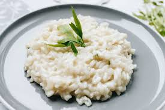
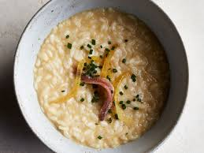
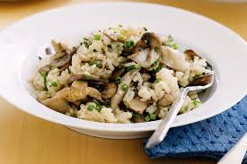

Description
Risotto is a northern Italian rice dish, of creamy consistency, which is cooked by periodically adding broth to boiling rice. The broth can be derived from meat, fish, or vegetables. Many types of risotto contain butter, onion, white wine, and parmesan cheese. I like the dish because of the variety of ways in can be prepared and enjoyed.
Ingredients
- 1 1/2 cups arborio rice
- 4 cups chicken stock
- 1/2 cup vermouth (or another dry white wine)
- 1 medium shallot (about 1/2 cup or 1/2 small onion, chopped)
- 3 tablespoons whole butter (divided)
- 1 tablespoon vegetable oil
- 1/4 cup Parmesan cheese (grated)
- 1 tablespoon Italian parsley (chopped)
- Kosher salt (to taste)
Steps
- Gather the ingredients.🛒
- Heat the stock to a simmer in a medium saucepan, then lower the heat so that the stock just stays hot.🍲
- In a large, heavy-bottomed saucepan, heat the oil and 1 tablespoon of the butter over medium heat. When the butter has melted, add the chopped shallot or onion. Sauté for 2 to 3 minutes or until slightly translucent.🥘
- Add the rice to the pot and stir it briskly with a wooden spoon so that the grains are coated with the oil and melted butter. Sauté for another minute or so, until there is a slightly nutty aroma. But don't let the rice turn brown.🍚
- Add the wine and cook while stirring, until the liquid is fully absorbed.🍷
- Add a ladle of hot chicken stock to the rice and stir until the liquid is fully absorbed. When the rice appears almost dry, add another ladle of stock and repeat the process.🍗
- Continue adding stock, a ladle at a time, for 20 to 30 minutes or until the grains are tender but still firm to the bite, without being crunchy.
- Stir in the remaining 2 tablespoons butter, the Parmesan cheese, and the parsley, and season to taste with Kosher salt.
- Serve in bowls.🥣
- Enjoy!
The Look, Smell & Taste
The aroma, and taste will depend, to a large extent, on your choice of broth and ingredients used to prepare the dish. The finished product should be creamy and thick. It's best served al dente, which means it should be fully cooked, yet still retain some firmness when you chew it.
Finished Product
- 
- 
- 
Alternative Recipes
Below are 5 alternative reciepes you can try in order to really enjoy the variety of risotto dishes have to offer: